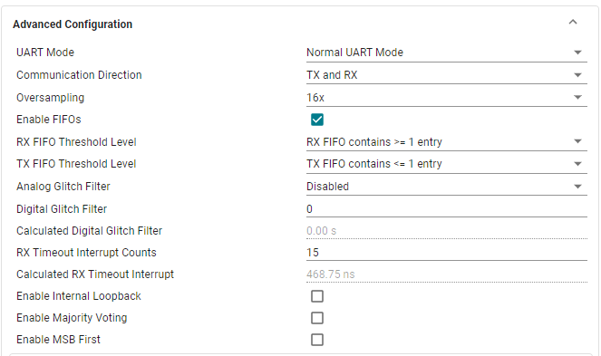
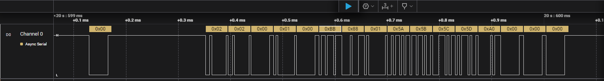

Modular Peripheral Sideband Tunneling Interface (M-PESTI) is a generic and extensible 1-wire, bidirectional circuit, and protocol for applications such as cabled high-speed I/O interposers, managed power distribution, cooling subsystems and control panels
Note: This driver will work with the M-PESTI Electical Circuit given in the base specification Version 1.2 Release Candidate 2. The circuit is shown below.
The MSPM0 SDK provides an easy way to start development of M-PESTI Target applications using the MSPM0’s Universal Asynchronous Receiver Transmitter (UART) module and contains the following:
Full source code for M-PESTI Target
Graphical configuration of UART (PESTI line) module using SysConfig
The M-PESTI target source code in the MSPM0 SDK was developed to be run on the MSPM0 devices. This source code implementation focuses on the basic capabilities and functions of the M-PESTI target to showcase the ability of the MSPM0 devices to handle PESTI communications via UART. The M-PESTI Target is implemented based on the Open Compute Project M-PESTI base specification V1.2 RC 2. This example supports the DPR, VWE and broadcast commands. PESTI Fanout is not included in this implementation. Optional features were excluded from this implementation. The source code is also availabe to modify and edit, allowing customers to modify or customize any feature as desired.
Note: The example code was only tested and validated on the MSPM0G3507.
Included Features
Target Detection
Simple presence using the hardware circuit provided by the spec.
Discovery Rules.
Active Phase Rules.
DPR command and the packet response.
VWE command with no support which sends 0 out to the initiator and with support, user can fill the buffer and send data.
The broadcast command can be interpreted and user can take action as needed.
The broadcast command only works after the DPR request received.
The source code provided for this example is mostly configure the UART as per the spec requirements. However, the UART pins should be configured as a high Z state for the circuit to work.
In SysConfig, navigate to the UART module under the communications tab
In the section labeled Basic Configuration, change the Target Baud Rate to 250000, and the parity to odd.
In the section labeled Advanced Configuration, select all the configuration as shown in the below picture.

The final UART configuration required is the Pin Configuration section. For the TX pin, select enable pin configuration, and in the Digital IOMUX Features, enable the High-Impedance feature.
In the interrupt configuration section, enable the interrupts as shown in the picture below.
Configure the Ready to Receive GPIO as shown below
The Circuit built on the breadboard as shown below
To import the M-PESTI Target example, select import project in Code Composer Studio(CCS), navigate to the examples folder in the SDK, select mpesti, select the MSPM0G folder, and navigate to the ticlang directory. Once imported, you can flash the code onto the device. Same way, open an another instance of the CCS and import the M-PESTI initiator project (this has been created to test the M-PESTI target).
To test this example, Build the breadboad circuit with the component shown in the circuit diagram (available at the top of this document). Then create a setup using the Initiator application programmed board, Breadboad circuit and Target application programmed board. The setup is shown below.
once the setup is ready, power it up, connect a logic analyzer to the pesti line, the break and ready to receive can be observed.
After this step, press switch S1 on the initiator launch pad, it will send DPR command and the target will respond with the DPR response and toggles the RED led. 
Press the switch S2 on the initiator launch pad, it will send VWE command and the target will respond with data packets and toggles the BLUE led. The data is configurable as per the user need.
Press the switch S1 again on the initiator launch pad, it will send the broadcast command and target will nto respond anything but it will toggle the Green led.
The source code for the M-PESTI Target implementation is available for editing. The user can use this driver as a starting point and modify existing features if needed. The user can modify the config parameters in the MPESTI_Target_Config.h as per their need. The VWE support is also configurable.